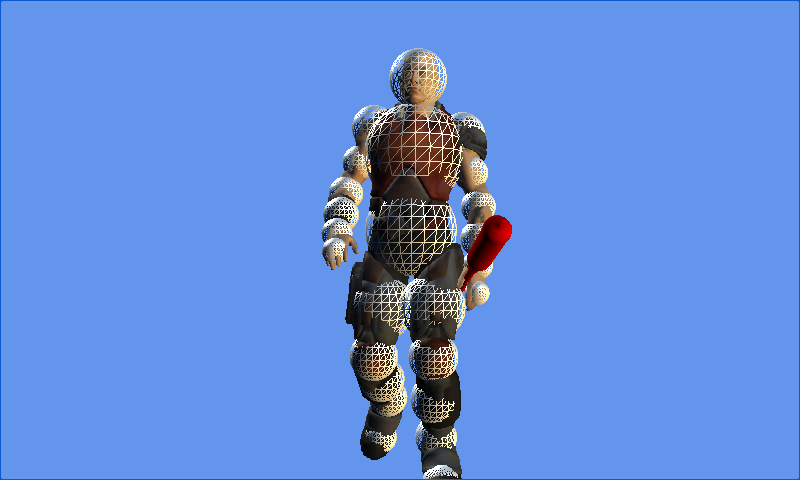

Skinned Model Extensions
Ported from Microsoft's XNA 4.0 Extending the Skinned Model Sample.
Source for this sample on GitHub ↗

Play ▸Opens in a new tab.
About this sample
This extension of the Skinning Sample looks up named bones and overrides the animated head and arm. A baseball bat follows the hand, while a set of animated wireframe spheres shows collision volumes around the character.
Controls
| Action | Control |
|---|---|
| Rotate the view | Arrow keys or W, A, S, D |
| Zoom | Z and X |
| Reset the view | R |
| Show or hide collision spheres | Enter |
| Turn the head | Page Up and Page Down |
| Wave the arm and bat | Space |
| Exit | Escape |